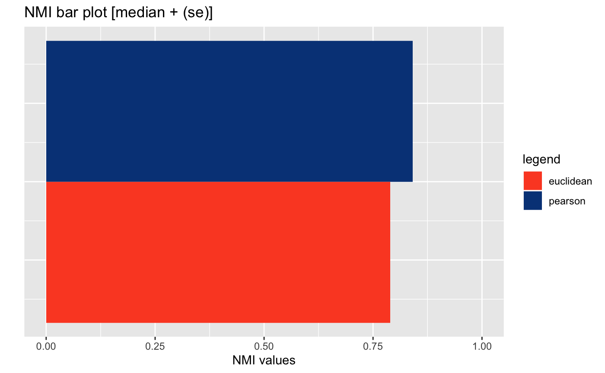
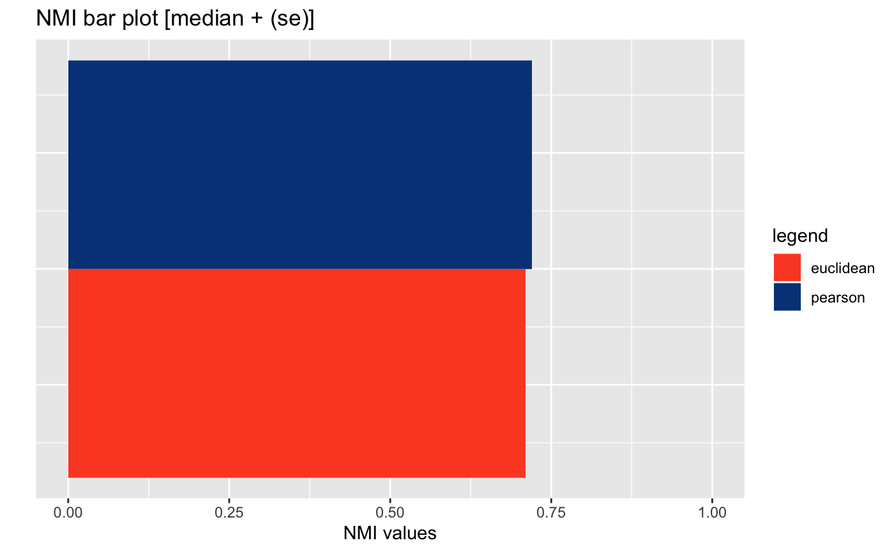
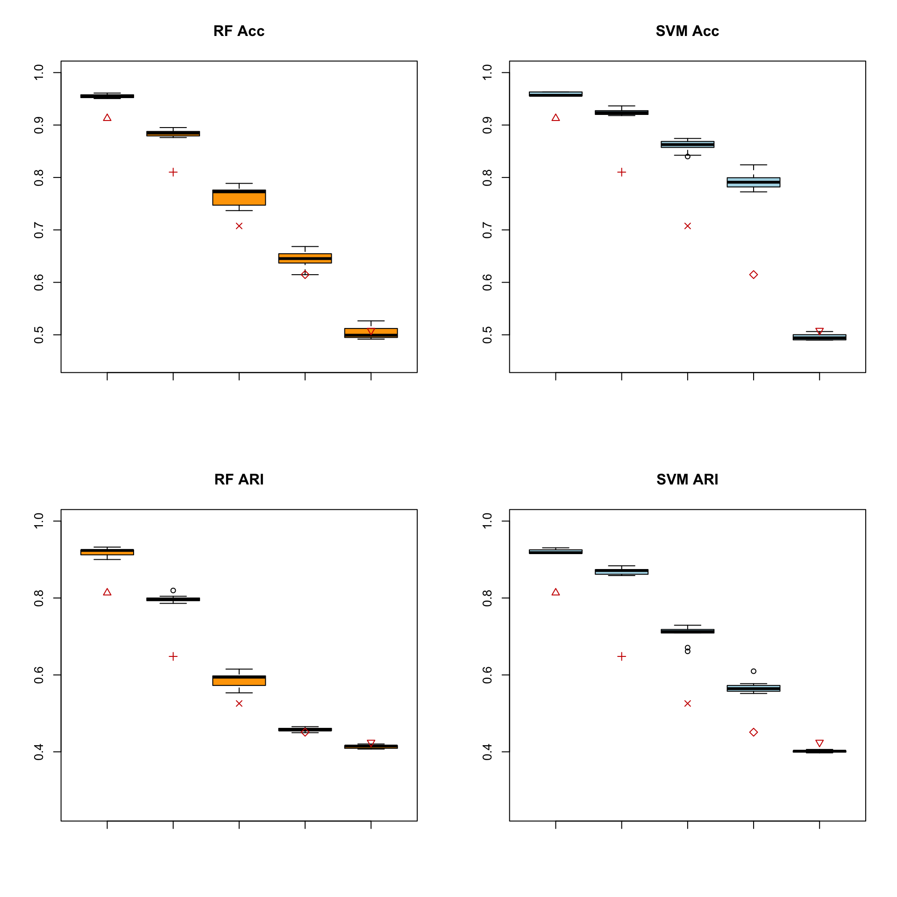
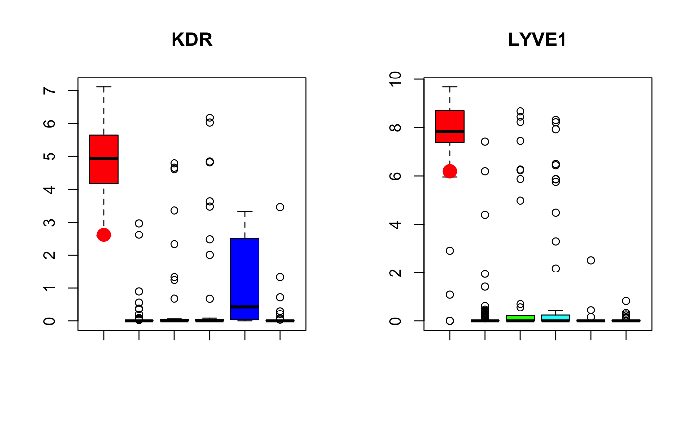
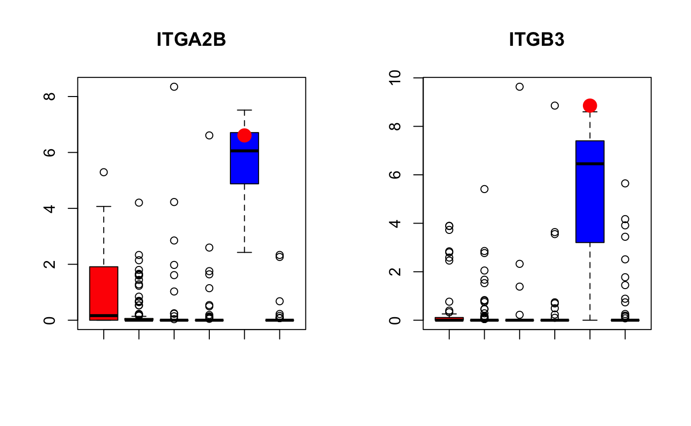
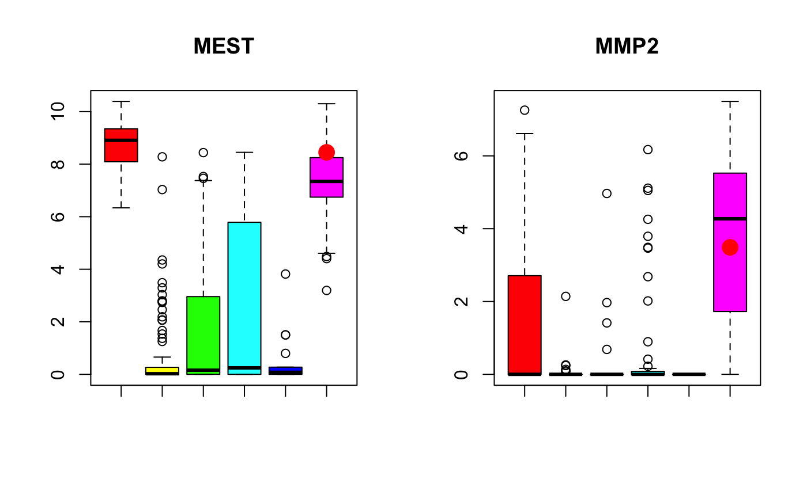
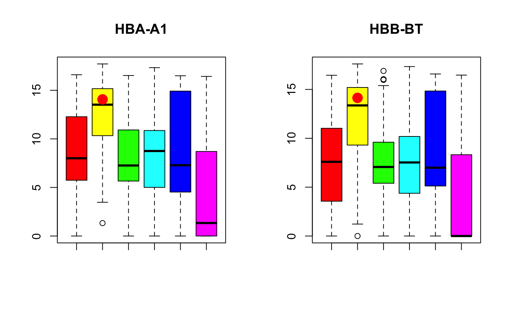

scdney
Taiyun Kim
22 August, 2019
scdney.RmdIntroduction
This R package is a collection of single cell RNA-sequencing (scRNA-seq) data analysis functions developed by team of Sydney Precision Bioinformatics Research Group at The University of Sydney.
This package contains useful functions for analysis of scRNA-seq data including clustering, cell type identification, etc.
Clustering
Load Data
# load library
suppressPackageStartupMessages({
library(scdney)
library(mclust)
library(dplyr)
})
# load dataset
data("GSE82187.sample")
dat <- GSE82187
dat <- log2(dat+1)
# show the data
dat[1:5,1:5]## Astro Astro Astro Astro Astro
## X0610005C13RIK 0.000000 0.000000 0.6815443 0.000000 0
## X0610007C21RIK 1.820536 1.705232 1.7367327 1.889957 0
## X0610007L01RIK 0.000000 0.000000 0.0000000 0.000000 0
## X0610007N19RIK 0.000000 0.000000 0.0000000 0.000000 0
## X0610007P08RIK 0.000000 0.000000 0.0000000 0.000000 0scClust
Using scClust
Using SIMLR clustering using Pearson correlation
# since we have already filtered genes, we will set 'geneFilter=1'. Alternatively, you can log transform your data without filtering and set 'geneFilter=0.8'. This will return same result.
dat.scClust <- dat.processed
colnames(dat.scClust) <- cellTypes
simlr.result <- scClust(dat.scClust, nCs, method = "simlr", similarity = "pearson", geneFilter = 1, seed = 1, cores.ratio = 0)## Computing the multiple Kernels.
## Performing network diffiusion.
## Iteration: 1
## Iteration: 2
## Iteration: 3
## Iteration: 4
## Iteration: 5
## Iteration: 6
## Iteration: 7
## Iteration: 8
## Iteration: 9
## Iteration: 10
## Iteration: 11
## Performing t-SNE.
## Epoch: Iteration # 100 error is: 0.05033674
## Epoch: Iteration # 200 error is: 0.03703323
## Epoch: Iteration # 300 error is: 0.03279473
## Epoch: Iteration # 400 error is: 0.03037768
## Epoch: Iteration # 500 error is: 0.02877687
## Epoch: Iteration # 600 error is: 0.02763045
## Epoch: Iteration # 700 error is: 0.0266981
## Epoch: Iteration # 800 error is: 0.02597019
## Epoch: Iteration # 900 error is: 0.02536068
## Epoch: Iteration # 1000 error is: 0.02484695
## Performing Kmeans.
## Performing t-SNE.
## Epoch: Iteration # 100 error is: 11.96658
## Epoch: Iteration # 200 error is: 0.1560267
## Epoch: Iteration # 300 error is: 0.1411494
## Epoch: Iteration # 400 error is: 0.130817
## Epoch: Iteration # 500 error is: 0.1324657
## Epoch: Iteration # 600 error is: 0.1280312
## Epoch: Iteration # 700 error is: 0.1162368
## Epoch: Iteration # 800 error is: 0.1144206
## Epoch: Iteration # 900 error is: 0.1135615
## Epoch: Iteration # 1000 error is: 0.1128412# Evaluate
adjustedRandIndex(cellTypes, simlr.result$y$cluster)## [1] 0.7165119
Using k-means clustering from amap package
km.result <- scClust(dat.scClust, nCs, method = "kmeans", similarity = "pearson", geneFilter = 1, seed = 1)
# Evaluate
adjustedRandIndex(cellTypes, km.result$cluster)## [1] 0.8987127
Benchmarking different metrics with scClustBench
Using SIMLR clustering to benchmark
simlr.bench <- scClustBench(dat.scClust, nCs, method = "simlr", similarity = c("euclidean", "pearson"), cores = 1, rep = 2, cores.ratio = 0)
simlr.bench.eval <- evalScClustBench(simlr.bench, method = "simlr")
p <- plotSimlrEval(simlr.bench.eval)
p
Using k-means from amap package to benchamrk
km.bench <- scClustBench(dat.scClust, nCs, method = "kmeans", similarity = c("euclidean", "pearson"), rep = 1, cores = 1)
km.bench.eval <- evalScClustBench(km.bench, method = "kmeans")
p <- plotKmeansEval(km.bench.eval)
p
Post hoc cell type classification
Load Data
# load dataset
data(GSE87795_liver.development.data)
dat <- GSE87795_liver.development.data$data
cellTypes <- GSE87795_liver.development.data$cellTypes
# Dimensions of the dataset
dim(dat)## [1] 15333 367# Show dataset
dat[1:5,1:5]## E11.5_C01 E11.5_C03 E11.5_C05 E11.5_C06 E11.5_C07
## GM6085 0.000000 0.000000 0.4839941 0.000000 0.000000
## GM6123 1.897989 1.675970 0.8656844 1.951340 1.356675
## MRPL15 3.057886 3.474138 2.4194391 4.279417 2.957743
## LYPLA1 4.254562 3.863993 0.3640490 3.392210 4.386651
## GM37988 7.399501 6.472117 5.1183986 5.852801 7.506831# Cell types
table(cellTypes)## cellTypes
## Endothelial Cell Erythrocyte Hepatoblast Macrophage
## 49 130 42 51
## Megakaryocyte Mesenchymal Cell
## 17 78Preprocessing
For single cell data, we filter genes with more than 80% of zeros across the dataset. Then we log2 transform the expression data to normalisation. Here, our dataset has already been processed.
# # Filter low expressed genes
# del <- which(rowSums(dat == 0) / ncol(dat) >= 0.8)
# dat.filtered <- dat[-del,]
#
# # log2 transformation
# dat.processed <- log2(dat.filtered + 1)
dat.processed <- datPart A - scReClassify (Demonstration)
Step-by-step guide to using scReClassify
Dimension reduction
dat.selected <- matPCs(dat.processed, 0.7)Synthetic noise (Demonstration purpose)
Here in this example, we will synthetically generate varying degree of noise in sample labels.
lab <- cellTypes
set.seed(1)
noisyCls <- function(dat, rho, cls.truth){
cls.noisy <- cls.truth
names(cls.noisy) <- colnames(dat)
for(i in 1:length(table(cls.noisy))) {
# class label starts from 0
if (i != length(table(cls.noisy))) {
cls.noisy[sample(which(cls.truth == names(table(cls.noisy))[i]), floor(sum(cls.truth == names(table(cls.noisy))[i]) * rho))] <- names(table(cls.noisy))[i+1]
} else {
cls.noisy[sample(which(cls.truth == names(table(cls.noisy))[i]), floor(sum(cls.truth == names(table(cls.noisy))[i]) * rho))] <- names(table(cls.noisy))[1]
}
}
print(sum(cls.truth != cls.noisy))
return(cls.noisy)
}
cls.noisy01 <- noisyCls(dat.selected, rho=0.1, lab)## [1] 34cls.noisy02 <- noisyCls(dat.selected, rho=0.2, lab)## [1] 71cls.noisy03 <- noisyCls(dat.selected, rho=0.3, lab)## [1] 108cls.noisy04 <- noisyCls(dat.selected, rho=0.4, lab)## [1] 144cls.noisy05 <- noisyCls(dat.selected, rho=0.5, lab)## [1] 182Use scReClassify with AdaSampling to correct mislabelled cell types.
Here, we will use both Support Vector machine (svm) and Random Forest (rf) model as base classifier.
Benchmark Evaluation
# names(lab) <- colnames(dat.selected)
###################################
# SVM
###################################
acc01 <- acc02 <- acc03 <- acc04 <- acc05 <- c()
ari01 <- ari02 <- ari03 <- ari04 <- ari05 <- c()
base <- "svm"
for(j in 1:10) {
final <- multiAdaSampling(dat.selected, cls.noisy01, seed=j, classifier=base, percent=1, L=10, iter = 5)$final
ari01 <- c(ari01, mclust::adjustedRandIndex(lab, final))
acc01 <- c(acc01, bAccuracy(lab, final))
final <- multiAdaSampling(dat.selected, cls.noisy02, seed=j, classifier=base, percent=1, L=10, iter = 5)$final
ari02 <- c(ari02, mclust::adjustedRandIndex(lab, final))
acc02 <- c(acc02, bAccuracy(lab, final))
final <- multiAdaSampling(dat.selected, cls.noisy03, seed=j, classifier=base, percent=1, L=10, iter = 5)$final
ari03 <- c(ari03, mclust::adjustedRandIndex(lab, final))
acc03 <- c(acc03, bAccuracy(lab, final))
final <- multiAdaSampling(dat.selected, cls.noisy04, seed=j, classifier=base, percent=1, L=10, iter = 5)$final
ari04 <- c(ari04, mclust::adjustedRandIndex(lab, final))
acc04 <- c(acc04, bAccuracy(lab, final))
final <- multiAdaSampling(dat.selected, cls.noisy05, seed=j, classifier=base, percent=1, L=10, iter = 5)$final
ari05 <- c(ari05, mclust::adjustedRandIndex(lab, final))
acc05 <- c(acc05, bAccuracy(lab, final))
}
###################################
# RF
###################################
rfacc01 <- rfacc02 <- rfacc03 <- rfacc04 <- rfacc05 <- c()
rfari01 <- rfari02 <- rfari03 <- rfari04 <- rfari05 <- c()
base <- "rf"
for(j in 1:10) {
final <- multiAdaSampling(dat.selected, cls.noisy01, seed=j, classifier=base, percent=1, L=10, iter = 5)$final
rfari01 <- c(rfari01, mclust::adjustedRandIndex(lab, final))
rfacc01 <- c(rfacc01, bAccuracy(lab, final))
final <- multiAdaSampling(dat.selected, cls.noisy02, seed=j, classifier=base, percent=1, L=10, iter = 5)$final
rfari02 <- c(rfari02, mclust::adjustedRandIndex(lab, final))
rfacc02 <- c(rfacc02, bAccuracy(lab, final))
final <- multiAdaSampling(dat.selected, cls.noisy03, seed=j, classifier=base, percent=1, L=10, iter = 5)$final
rfari03 <- c(rfari03, mclust::adjustedRandIndex(lab, final))
rfacc03 <- c(rfacc03, bAccuracy(lab, final))
final <- multiAdaSampling(dat.selected, cls.noisy04, seed=j, classifier=base, percent=1, L=10, iter = 5)$final
rfari04 <- c(rfari04, mclust::adjustedRandIndex(lab, final))
rfacc04 <- c(rfacc04, bAccuracy(lab, final))
final <- multiAdaSampling(dat.selected, cls.noisy05, seed=j, classifier=base, percent=1, L=10, iter = 5)$final
rfari05 <- c(rfari05, mclust::adjustedRandIndex(lab, final))
rfacc05 <- c(rfacc05, bAccuracy(lab, final))
}
result = list(
rfacc01 = rfacc01,
rfacc02 = rfacc02,
rfacc03 = rfacc03,
rfacc04 = rfacc04,
rfacc05 = rfacc05,
acc01 = acc01,
acc02 = acc02,
acc03 = acc03,
acc04 = acc04,
acc05 = acc05,
rfari01 = rfari01,
rfari02 = rfari02,
rfari03 = rfari03,
rfari04 = rfari04,
rfari05 = rfari05,
ari01 = ari01,
ari02 = ari02,
ari03 = ari03,
ari04 = ari04,
ari05 = ari05
)
plot.new()
par(mfrow = c(2,2))
boxplot(rfacc01, rfacc02, rfacc03, rfacc04, rfacc05, col="orange", main="RF Acc", ylim=c(0.45, 1))
points(x=1:5, y=c(bAccuracy(lab, cls.noisy01), bAccuracy(lab, cls.noisy02),
bAccuracy(lab, cls.noisy03), bAccuracy(lab, cls.noisy04),
bAccuracy(lab, cls.noisy05)), col="red3", pch=c(2,3,4,5,6), cex=1)
boxplot(acc01, acc02, acc03, acc04, acc05, col="lightblue", main="SVM Acc", ylim=c(0.45, 1))
points(x=1:5, y=c(bAccuracy(lab, cls.noisy01), bAccuracy(lab, cls.noisy02),
bAccuracy(lab, cls.noisy03), bAccuracy(lab, cls.noisy04),
bAccuracy(lab, cls.noisy05)), col="red3", pch=c(2,3,4,5,6), cex=1)
boxplot(rfari01, rfari02, rfari03, rfari04, rfari05, col="orange", main="RF ARI", ylim=c(0.25, 1))
points(x=1:5, y=c(mclust::adjustedRandIndex(lab, cls.noisy01), mclust::adjustedRandIndex(lab, cls.noisy02),
mclust::adjustedRandIndex(lab, cls.noisy03), mclust::adjustedRandIndex(lab, cls.noisy04),
mclust::adjustedRandIndex(lab, cls.noisy05)), col="red3", pch=c(2,3,4,5,6), cex=1)
boxplot(ari01, ari02, ari03, ari04, ari05, col="lightblue", main="SVM ARI", ylim=c(0.25, 1))
points(x=1:5, y=c(mclust::adjustedRandIndex(lab, cls.noisy01), mclust::adjustedRandIndex(lab, cls.noisy02),
mclust::adjustedRandIndex(lab, cls.noisy03), mclust::adjustedRandIndex(lab, cls.noisy04),
mclust::adjustedRandIndex(lab, cls.noisy05)), col="red3", pch=c(2,3,4,5,6), cex=1)
Part B - scReClassify (mislabelled cell type correction)
## [1] 20 367# run scReClassify
cellTypes.reclassify <- multiAdaSampling(dat.pc, cellTypes, seed = 1, classifier = "svm", percent = 1, L = 10, iter=5)
# Verification by marker genes
End <- c("KDR", "LYVE1")
Meg <- c("ITGA2B", "ITGB3")
Mes <- c("MEST", "MMP2")
Ery <- c("HBA-A1", "HBB-BT")
# check examples
idx <- which(cellTypes.reclassify$final != cellTypes)
cbind(original=cellTypes[idx], reclassify=cellTypes.reclassify$final[idx]) %>%
DT::datatable()c1 <- dat.processed[, which(cellTypes=="Endothelial Cell")]
c2 <- dat.processed[, which(cellTypes=="Erythrocyte")]
c3 <- dat.processed[, which(cellTypes=="Hepatoblast")]
c4 <- dat.processed[, which(cellTypes=="Macrophage")]
c5 <- dat.processed[, which(cellTypes=="Megakaryocyte")]
c6 <- dat.processed[, which(cellTypes=="Mesenchymal Cell")]
cs <- rainbow(length(table(cellTypes)))
# (example 1 E13.5_C20)
#####
par(mfrow=c(1,2))
marker <- End[1]
boxplot(c1[marker,], c2[marker,], c3[marker,], c4[marker,], c5[marker,], c6[marker,], col=cs, main=marker)
points(1, dat.processed[marker, which(colnames(dat.processed) %in% "E13.5_C20")], pch=16, col="red", cex=2)
marker <- End[2]
boxplot(c1[marker,], c2[marker,], c3[marker,], c4[marker,], c5[marker,], c6[marker,], col=cs, main=marker)
points(1, dat.processed[marker, which(colnames(dat.processed) %in% "E13.5_C20")], pch=16, col="red", cex=2)
#####
# (example 2 E13.5_C14)
#####
par(mfrow=c(1,2))
marker <- Meg[1]
boxplot(c1[marker,], c2[marker,], c3[marker,], c4[marker,], c5[marker,], c6[marker,], col=cs, main=marker)
points(5, dat.processed[marker, which(colnames(dat.processed) %in% "E13.5_C14")], pch=16, col="red", cex=2)
marker <- Meg[2]
boxplot(c1[marker,], c2[marker,], c3[marker,], c4[marker,], c5[marker,], c6[marker,], col=cs, main=marker)
points(5, dat.processed[marker, which(colnames(dat.processed) %in% "E13.5_C14")], pch=16, col="red", cex=2)
#####
# (example 3 E16.5_2_C65)
#####
par(mfrow=c(1,2))
marker <- Mes[1]
boxplot(c1[marker,], c2[marker,], c3[marker,], c4[marker,], c5[marker,], c6[marker,], col=cs, main=marker)
points(6, dat.processed[marker, which(colnames(dat.processed) %in% "E16.5_2_C65")], pch=16, col="red", cex=2)
marker <- Mes[2]
boxplot(c1[marker,], c2[marker,], c3[marker,], c4[marker,], c5[marker,], c6[marker,], col=cs, main=marker)
points(6, dat.processed[marker, which(colnames(dat.processed) %in% "E16.5_2_C65")], pch=16, col="red", cex=2)
######
# (example 4 E16.5_C17)
#####
par(mfrow=c(1,2))
marker <- Mes[1]
boxplot(c1[marker,], c2[marker,], c3[marker,], c4[marker,], c5[marker,], c6[marker,], col=cs, main=marker)
points(6, dat.processed[marker, which(colnames(dat.processed) %in% "E16.5_C17")], pch=16, col="red", cex=2)
marker <- Mes[2]
boxplot(c1[marker,], c2[marker,], c3[marker,], c4[marker,], c5[marker,], c6[marker,], col=cs, main=marker)
points(6, dat.processed[marker, which(colnames(dat.processed) %in% "E16.5_C17")], pch=16, col="red", cex=2)#####
# (example 5 E12.5_C72)
#####
par(mfrow=c(1,2))
marker <- Ery[1]
boxplot(c1[marker,], c2[marker,], c3[marker,], c4[marker,], c5[marker,], c6[marker,], col=cs, main=marker)
points(2, dat.processed[marker, which(colnames(dat.processed) %in% "E12.5_C72")], pch=16, col="red", cex=2)
marker <- Ery[2]
boxplot(c1[marker,], c2[marker,], c3[marker,], c4[marker,], c5[marker,], c6[marker,], col=cs, main=marker)
points(2, dat.processed[marker, which(colnames(dat.processed) %in% "E12.5_C72")], pch=16, col="red", cex=2)
#####
# (example 6 E12.5_C07)
#####
par(mfrow=c(1,2))
marker <- Ery[1]
boxplot(c1[marker,], c2[marker,], c3[marker,], c4[marker,], c5[marker,], c6[marker,], col=cs, main=marker)
points(2, dat.processed[marker, which(colnames(dat.processed) %in% "E12.5_C07")], pch=16, col="red", cex=2)
marker <- Ery[2]
boxplot(c1[marker,], c2[marker,], c3[marker,], c4[marker,], c5[marker,], c6[marker,], col=cs, main=marker)
points(2, dat.processed[marker, which(colnames(dat.processed) %in% "E12.5_C07")], pch=16, col="red", cex=2)
#####SessionInfo
## R version 3.6.1 (2019-07-05)
## Platform: x86_64-apple-darwin15.6.0 (64-bit)
## Running under: macOS Mojave 10.14.6
##
## Matrix products: default
## BLAS: /Library/Frameworks/R.framework/Versions/3.6/Resources/lib/libRblas.0.dylib
## LAPACK: /Library/Frameworks/R.framework/Versions/3.6/Resources/lib/libRlapack.dylib
##
## locale:
## [1] en_AU.UTF-8/en_AU.UTF-8/en_AU.UTF-8/C/en_AU.UTF-8/en_AU.UTF-8
##
## attached base packages:
## [1] stats graphics grDevices utils datasets methods base
##
## other attached packages:
## [1] dplyr_0.8.3 mclust_5.4.5 scdney_0.1.4
##
## loaded via a namespace (and not attached):
## [1] snow_0.4-3 backports_1.1.4
## [3] Hmisc_4.2-0 blme_1.0-4
## [5] plyr_1.8.4 igraph_1.2.4.1
## [7] lazyeval_0.2.2 splines_3.6.1
## [9] crosstalk_1.0.0 BiocParallel_1.18.0
## [11] GenomeInfoDb_1.20.0 ggplot2_3.2.0
## [13] amap_0.8-17 digest_0.6.20
## [15] foreach_1.4.4 htmltools_0.3.6
## [17] viridis_0.5.1 magrittr_1.5
## [19] checkmate_1.9.4 memoise_1.1.0
## [21] cluster_2.1.0 doParallel_1.0.14
## [23] mixtools_1.1.0 limma_3.40.2
## [25] recipes_0.1.6 gower_0.2.1
## [27] matrixStats_0.54.0 pkgdown_1.3.0
## [29] colorspace_1.4-1 ggrepel_0.8.1
## [31] pan_1.6 xfun_0.8
## [33] jsonlite_1.6 crayon_1.3.4
## [35] RCurl_1.95-4.12 roxygen2_6.1.1
## [37] lme4_1.1-21 survival_2.44-1.1
## [39] iterators_1.0.10 glue_1.3.1
## [41] polyclip_1.10-0 gtable_0.3.0
## [43] ipred_0.9-9 zlibbioc_1.30.0
## [45] XVector_0.24.0 DelayedArray_0.10.0
## [47] SingleCellExperiment_1.6.0 BiocGenerics_0.30.0
## [49] jomo_2.6-8 abind_1.4-5
## [51] scales_1.0.0 mvtnorm_1.0-11
## [53] Rcpp_1.0.1 xtable_1.8-4
## [55] viridisLite_0.3.0 htmlTable_1.13.1
## [57] proxy_0.4-23 foreign_0.8-71
## [59] Formula_1.2-3 DT_0.7
## [61] stats4_3.6.1 lava_1.6.5
## [63] prodlim_2018.04.18 htmlwidgets_1.3
## [65] RColorBrewer_1.1-2 acepack_1.4.1
## [67] mice_3.6.0 pkgconfig_2.0.2
## [69] manipulate_1.0.1 farver_1.1.0
## [71] nnet_7.3-12 caret_6.0-84
## [73] later_0.8.0 labeling_0.3
## [75] tidyselect_0.2.5 rlang_0.4.0
## [77] reshape2_1.4.3 pbmcapply_1.5.0
## [79] munsell_0.5.0 tools_3.6.1
## [81] generics_0.0.2 broom_0.5.2
## [83] ggridges_0.5.1 evaluate_0.14
## [85] stringr_1.4.0 yaml_2.2.0
## [87] ModelMetrics_1.2.2 knitr_1.23
## [89] fs_1.3.1 randomForest_4.6-14
## [91] purrr_0.3.2 mitml_0.3-7
## [93] dendextend_1.12.0 ggraph_1.0.2
## [95] nlme_3.1-140 mime_0.7
## [97] xml2_1.2.0 compiler_3.6.1
## [99] rstudioapi_0.10 e1071_1.7-2
## [101] tibble_2.1.3 tweenr_1.0.1
## [103] DescTools_0.99.28 stringi_1.4.3
## [105] desc_1.2.0 hopach_2.44.0
## [107] lattice_0.20-38 Matrix_1.2-17
## [109] commonmark_1.7 nloptr_1.2.1
## [111] pillar_1.4.2 data.table_1.12.2
## [113] bitops_1.0-6 httpuv_1.5.1
## [115] GenomicRanges_1.36.0 R6_2.4.0
## [117] latticeExtra_0.6-28 promises_1.0.1
## [119] gridExtra_2.3 IRanges_2.18.1
## [121] codetools_0.2-16 boot_1.3-22
## [123] MASS_7.3-51.4 assertthat_0.2.1
## [125] SummarizedExperiment_1.14.0 MAST_1.10.0
## [127] rprojroot_1.3-2 minpack.lm_1.2-1
## [129] withr_2.1.2 S4Vectors_0.22.0
## [131] GenomeInfoDbData_1.2.1 expm_0.999-4
## [133] parallel_3.6.1 doSNOW_1.0.16
## [135] grid_3.6.1 rpart_4.1-15
## [137] timeDate_3043.102 tidyr_0.8.3
## [139] class_7.3-15 minqa_1.2.4
## [141] rmarkdown_1.14 segmented_1.0-0
## [143] clusteval_0.1 ggforce_0.2.2
## [145] shiny_1.3.2 Biobase_2.44.0
## [147] lubridate_1.7.4 base64enc_0.1-3